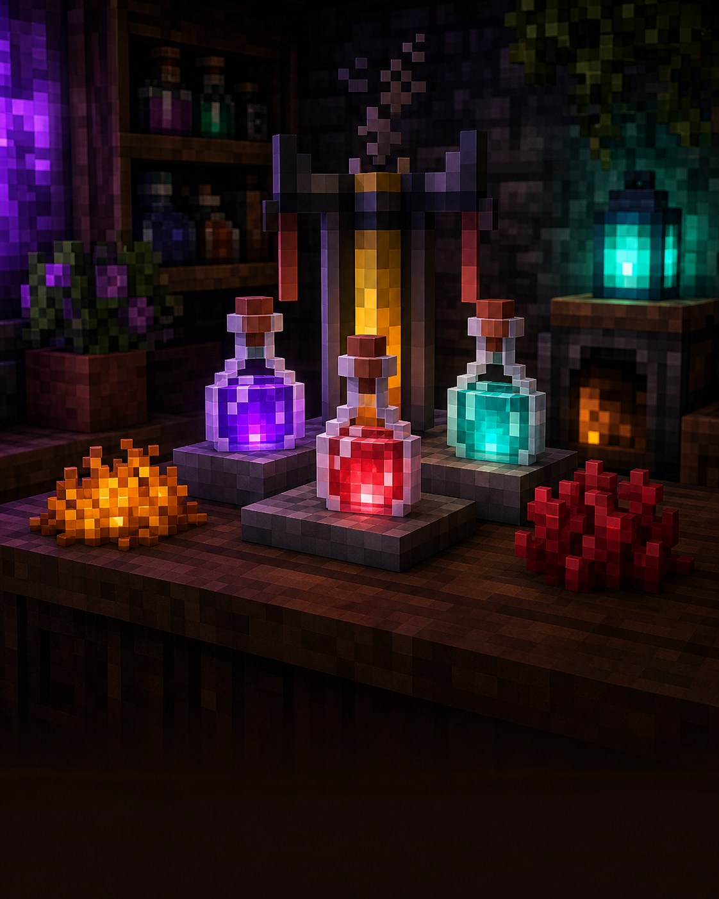

Велика пригода
Світ не закінчується вдома
Зілля —
це кишенькові
суперсили.
Варильна стійка перетворює пляшки води на корисні ефекти для небезпечних пригод.

Навіщо це потрібно?
Зілля не лише роблять речі красивішими. Вони допомагають швидше бігати, дихати під водою, пережити вогонь або відновити здоров’я.
Мінімальний набір
Як почати варити
Спершу збудуй варильну стійку: стрижень іфрита + 3 кам’яні блоки. У неї поклади пальне — порошок іфрита — і до трьох пляшок води.
Важливо: незерський наріст — це перший крок майже для всіх корисних зіль. Знайдеш його у фортеці Незеру.
Три прості дії
Як зварити перше зілля
1Зроби незграбне зілляПляшка води + незерський наріст+
Поклади до трьох пляшок води в нижні комірки, а наріст — у верхню. Додай порошок іфрита як паливо.
2Додай один інгредієнтВін визначить ефект+
Наприклад, цукор дає швидкість, а магмовий крем — захист від вогню. Не змішуй усе одразу: додавай по одному кроку.
3Забери готові пляшкиЕфект уже написаний у назві+
Варильна стійка може зробити три однакові зілля за раз. Візьми їх із собою лише для потрібної пригоди.
Почни з цих
9 корисних зіль
Усі рядки, крім слабкості, починаються з незграбного зілля.
Зцілення
Одразу повертає частину здоров’я.
Блискуча скибка кавунаВогнестійкість
Допомагає в Незері та біля лави.
Магмовий кремНічне бачення
Легше бачити у темних печерах.
Золота моркваШвидкість
Швидше бігати та досліджувати.
ЦукорСила
Більше шкоди мечем у бою.
Порошок іфритаВодне дихання
Дає час для підводної пригоди.
ІглобрюхРегенерація
Поступово відновлює здоров’я.
Сльоза ґастаПовільне падіння
Рятує від висоти, особливо в Енді.
Перетинка фантомаСлабкість
Потрібне для лікування зомбі-жителя.
Пляшка води + ферментоване павуче окоХочеш змінити ефект? Редстоун часто подовжує дію, світлокам’яний пил може посилити її, а порох робить зілля вибуховим. Не кожне зілля має всі три варіанти — дивись на результат у стійці.
Маленьке завдання
Спробуй за 5 хвилин
- Зроби три пляшки води.
- Звари перше незграбне зілля.
- Обери один ефект для наступної пригоди.
★ Бонус: збережи зілля слабкості для майбутнього порятунку зомбі-жителя.